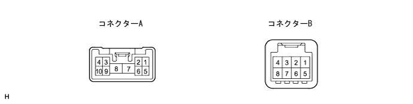
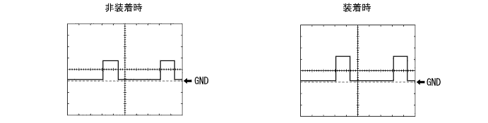

Pre-crash Safety System Terminals of ECU |
Using SST (Toyota electrical tester), measure the voltage and resistance between each terminal or between each terminal and body ground.

Using TaSCAN, check that pulses are generated between each terminal or between each terminal and body ground.
| Tester Connection | Input/Output | Item | Condition | Standard |
|---|---|---|---|---|
| A1(MOR-)←→A8(PGND) | Output | Voltage | IG ON | 4 to 8.5 V |
| A2(MOR+)←→A8(PGND) | Output | Voltage | IG ON | 4 to 8.5 V |
| A3(MOL+)←→A8(PGND) | Output | Voltage | IG ON | 4 to 8.5 V |
| A4(MOL-)←→A8(PGND) | Output | Voltage | IG ON | 4 to 8.5 V |
| A7(+B)←→A8(PGND) | Input | Voltage | Always | 11 to 14 V |
| A8 (PGND) ←→ Body ground | - | Resistance | Always | Below 1 Ω |
| Tester Connection | Input/Output | Item | Condition | Standard |
|---|---|---|---|---|
| B1(CANH)←→A8(PGND) | Input/Output | Waveform | IG ON | Pulse Generation |
| B2(CANL)←→A8(PGND) | Input/Output | Waveform | IG ON | Pulse Generation |
| B3(DBK-)←→A8(PGND) | - | Resistance | Always | Below 1 Ω |
| B4(DBK+)←→A8(PGND) | Input | Waveform | IG ON, seat belt buckle switch unfastened → fastened | Pulse Generation (Waveform 1) |
| B5(PBK+)←→A8(PGND) | Output | Waveform | IG ON, seat belt buckle switch unfastened → fastened | Pulse Generation (Waveform 1) |
| B6(PBK-)←→A8(PGND) | - | Resistance | Always | Below 1 Ω |
| B8(IG1)←→A8(PGND) | Input | Voltage | IG ON | 11 to 14 V |
Waveform 1

| Item | Description |
|---|---|
| Measurement Terminal | B4(DBK+) - B3(DBK-)、B5(PBK+) - B6(PBK-) |
| Tool Setting | 2V/DIV、20ms/DIV |
| Measurement Condition | IG ON, seat belt buckle switch unfastened |